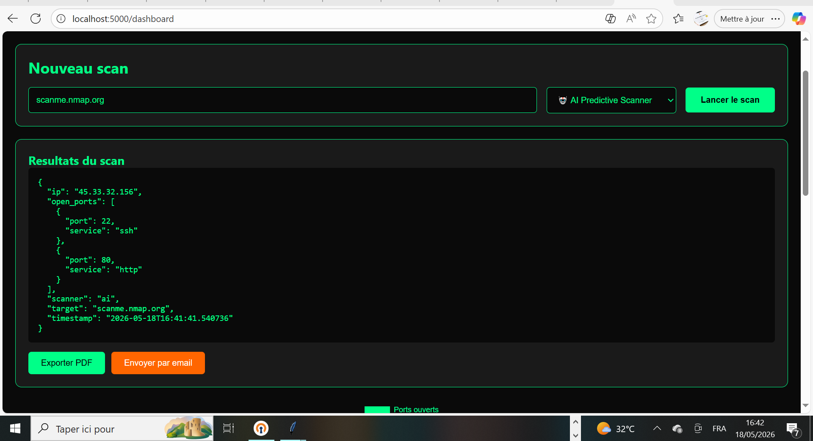

📖 Documentation SENTRAX
📥 Installation
1. Télécharger SENTRAX
Téléchargez la dernière version depuis la page GitHub Releases ou depuis le site officiel.
2. Extraire le ZIP
Faites un clic droit sur le fichier ZIP → "Extraire tout".
3. Lancer l'application
Double-cliquez sur SENTRAX.exe (Windows) ou exécutez python launcher.py (Linux/Mac).
4. Installer les dépendances (version source)
pip install -r requirements.txt
🐳 Docker (Linux / macOS / Windows)
1. Pull l'image Docker
docker pull patrickndaye919/sentrax:latest
2. Lancer le conteneur
docker run -p 5000:5000 patrickndaye919/sentrax:latest
3. Accéder au dashboard
Ouvrez http://localhost:5000/dashboard dans votre navigateur.
🎯 Utilisation
1. Lancer l'application
Double-cliquez sur SENTRAX.exe.
2. Choisir un scanner
Sélectionnez l'un des 10 scanners dans le menu principal.
3. Entrer la cible
Saisissez une IP (ex: 192.168.1.1) ou un domaine (ex: scanme.nmap.org).
4. Lancer le scan
Cliquez sur "LAUNCHER" et patientez.
5. Accéder au Dashboard web
Dans le menu Help → Dashboard. L'API se lance automatiquement et le dashboard s'ouvre dans votre navigateur. Nouveau !
6. Analyser les résultats
Les ports ouverts s'affichent avec leurs services détectés.
📊 Dashboard Web
1. Lancer l'API (alternative)
python web/api.py
2. Ouvrir le navigateur
Allez sur http://localhost:5000/dashboard
3. Se connecter
Identifiants par défaut : admin / Admin123!
4. Utiliser le dashboard
Choisissez un scanner, entrez une cible, visualisez les résultats et l'historique.
📸 Dashboard web - Interface moderne avec graphiques

🔐 API REST
Authentification
# Obtenir un token JWT
curl -X POST http://localhost:5000/api/login \
-H "Content-Type: application/json" \
-d '{"username":"admin","password":"Admin123!"}'
Lancer un scan
curl -X POST http://localhost:5000/api/scan \
-H "Content-Type: application/json" \
-H "Authorization: Bearer VOTRE_TOKEN" \
-d '{"target":"scanme.nmap.org","scanner":"expert"}'
Récupérer les résultats
curl -X GET http://localhost:5000/api/scan/SCAN_ID \
-H "Authorization: Bearer VOTRE_TOKEN"
Exporter en PDF
curl -X GET http://localhost:5000/api/export/pdf/SCAN_ID \
-H "Authorization: Bearer VOTRE_TOKEN" \
--output rapport.pdf
❓ FAQ
Quels systèmes d'exploitation sont supportés ?
Windows 10/11, Linux (Ubuntu, Debian, Kali), macOS. L'EXE est pour Windows uniquement, la version source fonctionne sur tous les OS.
Est-ce que c'est gratuit ?
Oui, SENTRAX est totalement gratuit et open source sous licence MIT. Aucune limite, aucune fonctionnalité payante.
Comment changer le mot de passe par défaut ?
Connectez-vous au dashboard (admin/Admin123!), allez dans l'onglet "Sécurité" → "Changer mot de passe".
Comment activer la double authentification (2FA) ?
Dans l'onglet "Sécurité" → "Activer 2FA", scannez le QR code avec Google Authenticator.
Comment signaler un bug ?
Puis-je utiliser SENTRAX pour scanner des serveurs externes ?
Oui, mais uniquement sur des cibles autorisées. Le scanner sans autorisation est strictement interdit.
🛡️ Exemples de cibles autorisées
scanme.nmap.org - Serveur de test officiel Nmap (recommandé pour les tests)google.com - Site public (scan limité)127.0.0.1 - Votre propre machinelocalhost - Votre propre machine